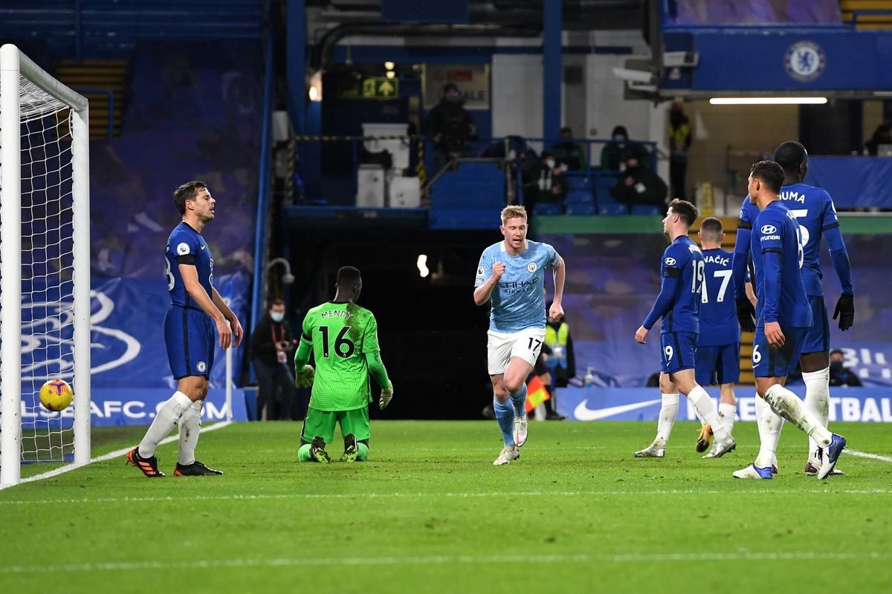
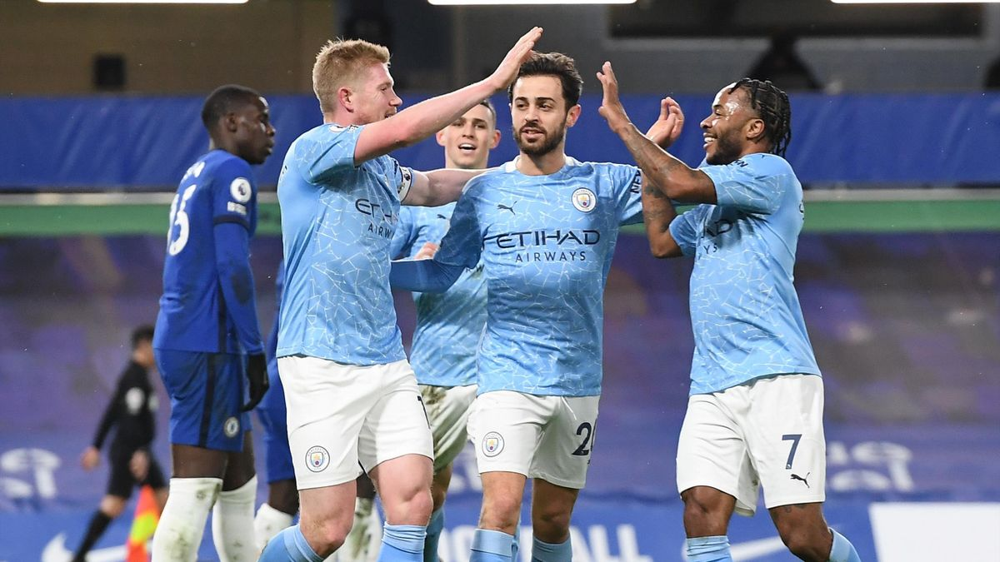
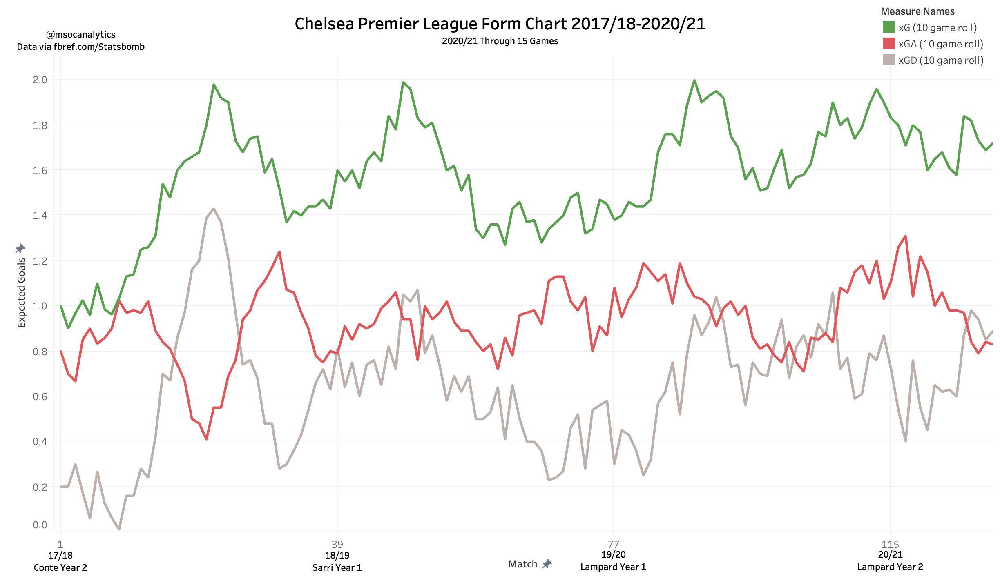

-
Make Room For Manchester City
by Mitchel Green - January 3, 2021
|
mitchgr@umich.edu

Final Score: Chelsea 1-3 Manchester City
Chelsea got a consolation goal late, but make no mistake, Manchester City absolutely dominated their opponents. A tight first 15 minutes turned into an all-out massacre after Ilkay Gundogan’s 18th-minute goal. A quick second shortly after meant Chelsea were never in the game again, and Manchester City continued their climb back up the Premier League table. Here are five key takeaways:
1. Despite Missing Personnel, City’s System Pulls Through
This was an interesting game to try and predict. Manchester City were missing numerous players due to COVID - including Ederson, Kyle Walker, and Gabriel Jesus - with Aymeric Laporte also missing out through injury. City are known for their excellent depth, but how the best defense in the league would cope without three key pieces was something I was keeping an eye on today. As it turns out, they coped just fine. Chelsea barely got anything going offensively - though that wasn’t all on City’s defense, which I’ll get into later - and City’s defense dominated the ball long enough to get the 2-0 lead they needed to sit back and counter Chelsea’s poor possession play. At the other end, Manchester City were again without a natural striker, but their plethora of creative midfielders made sure the offense created enough chances to score goals (they scored 3 from an xG of 3.18). It was the kind of dominant performance we are used to seeing from Manchester City, but for some reason, people have not been talking about until now. Perhaps a combination of not scoring as many goals as usual and 2 fewer games played keeping them from the top of the table are why this is the case, but this performance was a reminder not to forget about the most dominant team of the past few seasons.

2. Chelsea’s Offensive Spacing Ensure They Are Never In The Game
Chelsea’s starting lineup provided a front three that fans have been begging to see since the club’s summer spending spree. Though it was missing Kai Havertz as a 10 behind them, the Christian Pulisic, Timo Werner, Hakim Ziyech frontline started for the first time together. Unfortunately, it was quite underwhelming. They just did not seem to work well together, especially with the players behind them. With the personnel used, every Chelsea attack just seemed too congested to create anything threatening. This was especially prevalent after City took the lead and Chelsea had to play with more of the ball. Pulisic and Werner were often occupying the same spaces (and if it was not Pulisic and Werner, it was Pulisic and Mount). The same thing happened quite often in the right half-space as any time Kovacic tried to push up he found himself in the same space as Ziyech. Width on the right side of the field was also an issue as Cesar Azpilicueta - in for the injured Reece James - could not provide what was needed in possession. The issue on the right was somewhat helped with the substitution of Callum Hudson-Odoi, as he provided both the creative passing of Ziyech while maintaining the width to create proper spacing on that side, but even then it was too little too late. If Chelsea want to get the most out of their talent, Lampard has to be able to get the team’s spacing sorted out quickly.
3. What Will Manchester City Look Like With An Actual Striker?
As we saw today, Manchester City can still create chances at an incredibly high level even without a natural striker in the lineup (perhaps because there isn’t a natural striker in the lineup?). However, because of the lack of a high-quality finisher, City have only been scoring goals at a mid-table rate. We did not really see anything of note from Sergio Aguero in his short cameo at the end of the match, but we know what he can do when healthy and playing games. With Aguero back in the lineup (whenever that may be) we should see City find another gear on offense, and with how good their defense has been they may be an unstoppable force for the rest of the season. It’s a scary thought for rival fans, and it makes total sense why many analytics sites like 538 still have Manchester City projected to win the league.
4. Frank Lampard Must Be On The Hot Seat
I wrote an article about Frank Lampard and his performance as Chelsea manager already, so I will try to keep this short. I think Frank Lampard has hit his ceiling at Chelsea. At best, he has performed no better than Sarri, and despite the large influx of talent, he has still been unable to break that ceiling (see image below). He has been an excellent transitional coach, easing out the previous core and bringing in young, homegrown pieces that have become key pieces, but he will likely never get Chelsea to be any better than they are right now. Thomas Tuchel is available and is a top-class manager. The end of this season would be a good time for Chelsea to move on from Lampard and get their Jurgen Klopp or Pep Guardiola.

5. Quiet Day For The Americans
Whenever there are USMNT players on the field, I am always keeping an eye on them. For Zack Steffen, his first Premier League start was fairly uneventful. A foolish early mistake - picking up a backpass from a teammate - gave Chelsea and freekick but nothing came of it. He made one simple save on an Azpilicueta header, and conceded a goal to a nice finish from Hudson-Odoi. Other than that he was not given much to do as Chelsea struggled to get going in the final third. Christian Pulisic was a bit more active for Chelsea. He was their best outfield starter, but that really is not saying much. He struggled to get space to shoot and could not really create much with his passing. He was critical in buildup play, with his driving carries being Chelsea’s main form of ball progression, but it ultimately came to nothing in the final third. Quiet games for both American internationals, but it is nice to see US players starting on either side of a game of this magnitude.